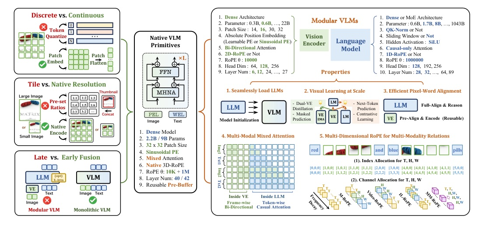
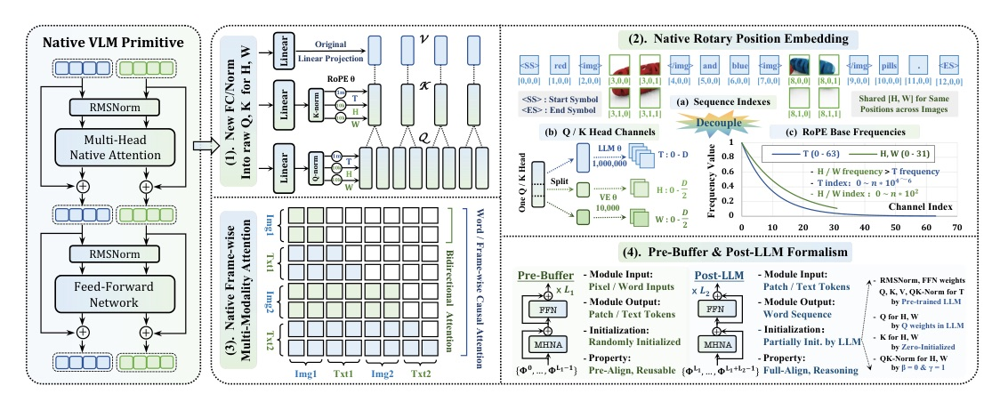

From Pixels to Words - Towards Native Vision-Language Primitives at Scale
NEO 把 Vision Encoder、Projector、LLM 的接力，收斂成同一個可擴展的原生多模態 Transformer。
完整論文標題：From Pixels to Words - Towards Native Vision-Language Primitives at Scale
不是把 image tokens 塞進 LLM 而已。
NEO 為 pixels 與 words 設計同一套 原生基本元件：各自的位置幾何、各自的注意力規則，卻共享一個 end-to-end backbone。
模組式 VLM 很強，但接點就是成本
Modular VLM
- 預訓練 Vision Encoder + Projector + LLM，各自擅長自己的模態
- 靠多階段 post-training 處理解析度、比例、對齊
- 代價是異質基礎設施、VE 的語義偏置與反覆 alignment
Earlier native VLM
- 在 LLM 內學視覺表徵，容易效率差、訓練不穩
- 視覺訊號可能干擾既有語言知識
- 把 module 共用化，仍沒處理 encoding / interaction 的本質差異
原生 VLM 需要同時借到兩邊的長處

NEO 的四個宣稱
- Primitive: Flexible Position Encoding + Multi-Head Native Attention + Native-RoPE。
- Architecture: PEL/WEL、pre-Buffer、post-LLM 都由同一種 primitive 組成。
- Training: 從凍結 LLM 的視覺預訓練，漸進地轉為全網 end-to-end。
- Evidence: 2.2B / 9B 與 modular / native VLM 的 benchmark 及設計 ablation。
先用 pre-Buffer 對齊，後讓 post-LLM 推理

連輸入層也不假裝 pixels 等於 words
Image → visual tokens
- 兩層 convolution；stride 16 / 2
- 每個 visual token 對應 32 x 32 patch
- 以 <img> / </img> 包住 visual token span
Text → word tokens
- 沿用原始 LLM tokenizer / word embedding
- 視覺與文字 token 合流進同一 backbone
- 共享表示空間，但不要求共享 position / mask 規則
在 LLM 相容骨架內，增添真正的空間維度
- 維持 RMSNorm + SwiGLU，避免重新發明語言模型的核心 block。
- 擴增 Query / Key head dimension；保留 T，新增 H 與 W 及各自的 QK normalization。
- 額外參數約為 raw Transformer block 的 10%。
把「序列位置」拆成 T、H、W 三種尺度

不同軸，使用不同 index、channel、frequency
| Axis | Index behavior | Role |
|---|---|---|
| T | Text retains T; each video frame increments T | Local + long-range sequence relation |
| H / W | Text zeroes H/W; image patch gets spatial coordinates | Local 2D dependency |
| Across modalities | Next segment begins after prior max T | Continuous, unambiguous mixed sequence |
- Reported base frequencies: beta_T = 1e6, beta_H = beta_W = 1e4.
- Image pairs restart H/W at (0,0), reinforcing correspondence at matching regions.
同一個 attention block，兩種 mask
Text tokens
Causal
- 僅看前文
- 保持 autoregressive generation
- 保留 LLM 的語言建模模式
Image tokens
Bidirectional
- 同一張圖內全面互看
- 像 visual encoder 一樣建模空間 / context
- 以 FlexAttention 降低 variable-length block masking 成本
pre-Buffer 保護 LLM，之後再融回單體
Pre-Buffer
- 隨機初始化
- 將 pixels / words 預對齊成 shared representation
- 學成後是可重用的視覺前端資產
Post-LLM
- 部分繼承 LLM 的 RMSNorm、FFN、temporal Q/K/QK-Norm
- H/W Q 由 temporal Q 初始化；H/W K 為 zero-init
- pre-training 後兩者 merge 成單一 backbone
三階段：先學視覺，再做對齊，最後學指令

資料量不是唯一的設計；解凍順序才是
| Stage | Data | What trains |
|---|---|---|
| Pre-training | 345M image-caption pairs | PEL, pre-Buffer, new post-LLM QK / norm; LLM frozen |
| Mid-training | 40M caption / conversation / detection / OCR | Entire architecture |
| SFT | ~4M bilingual instructions | Entire network |
- Pre-training corpus includes LAION, COYO, BLIP3o, OpenImages, LAION-COCO, Wukong sources.
- Pre- and mid-training keep language : multimodal data at 3 : 7.
兩種 scale、三類任務群
Model setup
- NEO-2.2B on Qwen3-1.7B; pre-Buffer L1=12
- NEO-9B on Qwen3-8B; pre-Buffer L1=6
- 16 x 8-GPU 80G nodes; AdamW
Benchmark coverage
- Document / chart / OCR: AI2D, DocVQA, ChartQA, InfoVQA, TextVQA, OCRBench
- Perception & reasoning: MMMU, MMBench, MMVet, MMStar, SEEDBench-IMG
- Hallucination: POPE, HallusionBench
NEO 2B：在 native VLM 群組中收斂到更高的通用分數
| 2B native VLM | MMMU | MMB | MMVet | MMStar | SEED-I | POPE |
|---|---|---|---|---|---|---|
| Mono-InternVL | 33.7 | 65.5 | 40.1 | - | 67.4 | - |
| HoVLE | 32.2 | 73.3 | 43.8 | - | 70.9 | 87.4 |
| OneCAT | 39.0 | 72.4 | 42.4 | - | 70.9 | - |
| NEO | 48.6 | 76.0 | 49.6 | 54.2 | 74.2 | 87.5 |
NEO 2B：對 visual QA / document tasks 的 native 對照
| 2B native VLM | AI2D | DocVQA | ChartQA | InfoVQA | TextVQA | OCRBench |
|---|---|---|---|---|---|---|
| Mono-InternVL | 68.6 | 80.0 | 73.7 | 43.0 | 72.6 | 76.7 |
| HoVLE | 73.0 | 86.1 | 78.6 | 55.7 | 70.9 | 74.0 |
| OneCAT | 72.4 | 87.1 | 76.2 | 56.3 | 67.0 | - |
| NEO | 80.1 | 89.9 | 81.2 | 63.2 | 74.0 | 77.1 |
9B 並非每一項都自然勝過 2B
| NEO scale | MMMU | MMB | MMVet | MMStar | POPE | HallB |
|---|---|---|---|---|---|---|
| 2.2B | 48.6 | 76.0 | 49.6 | 54.2 | 87.5 | 43.1 |
| 9B | 54.6 | 82.1 | 53.6 | 62.4 | 88.4 | 46.4 |
- NEO-9B Visual QA: AI2D 83.1, DocVQA 88.6, ChartQA 82.1, InfoVQA 60.9, TextVQA 75.0, OCRBench 77.7.
- 作者特別指出：9B 沒有超過 2B 的 DocVQA / InfoVQA，瓶頸指向 training corpus。
Native-RoPE 的收益不是「3D position 比 1D 多」。
它讓 長文本的時間尺度 與 局部影像的空間尺度 不再互相污染；mixed mask 再讓影像保有它本來就需要的雙向關係。
把 mixed attention 與 Native-RoPE 一起打開，平均分數最高
| Config | Attention | RoPE | Avg. |
|---|---|---|---|
| A | Causal | 1D-RoPE | 39.1 |
| B | Mixed | 1D-RoPE | 39.8 |
| F | Mixed | Video-RoPE | 43.2 |
| G | Causal | Native-RoPE | 40.3 |
| H | Mixed | Native-RoPE | 44.0 |
| I | Mixed | Native-RoPE; H/W freq=1M | 42.0 |
- Mixed over causal: +0.7 with 1D-RoPE (A→B), +3.7 with Native-RoPE (G→H).
- Native-RoPE mixed is +0.8 over the strongest alternative listed, Video-RoPE.
- Making H/W base frequency 1M costs 2.0 average points (H→I).
學到的 visual front-end 能接近既有 Vision Encoder

- 完成兩階段 retraining 後，PB3 分別只落後 CLIP / InternViT / SigLIP 1.7 / 2.4 / 3.7 percentage points。
- 只用 22M training samples 的 PB3，距 full NEO 僅 2.5 points。
同為 Qwen3-1.7B，NEO 的增益不只靠換 backbone 或堆資料

目前的瓶頸仍是 data scale / quality
- 作者承認 NEO 在 MMMU、InfoVQA、TextVQA 等 knowledge- / OCR-heavy tasks 有落差。
- 2.2B → 9B 的擴大沒有普遍解決 DocVQA / InfoVQA，表示不是單純加參數。
- 倫理聲明也保留資料偏誤與濫用風險；需 data curation、responsible deployment、transparent reporting。
原文螢光筆：primitive 的定義
one native VLM primitive should: (i) effectively align pixel and word representations within a shared semantic space; (ii) seamlessly integrate the strengths of formerly separate vision and language modules; (iii) inherently embody various cross-modal properties...
原生 VLM 的基本元件必須：在共享語義空間對齊像素與詞、整合原先分離的視覺與語言長處，並內建跨模態特性。Abstract p.1
原文螢光筆：mixed attention 的理由
Text tokens adhere to standard causal attention... In contrast, image tokens employ full bidirectional attention, enabling exhaustive interactions among all visual tokens, akin to a visual encoder.
文字 token 保留因果注意力；影像 token 則採完整雙向注意力，讓所有視覺 token 能充分互動，如同 visual encoder。§3.1 p.5
要做 monolithic VLM，別只問「能否共用 backbone」。
更重要的是：哪些 inductive bias 必須保留成 per-modality 的 position、mask、初始化與訓練節奏。
NEO：讓 pixels 與 words 原生共居，但不強迫它們變成同一種 token。
Tomorrow: Video generation / temporal models